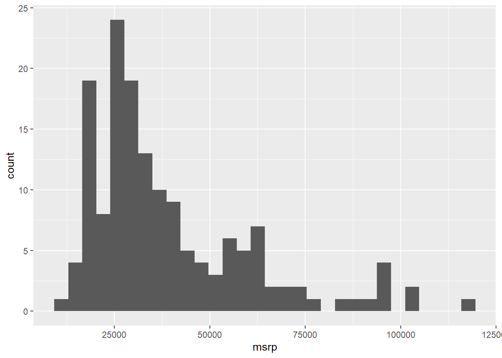
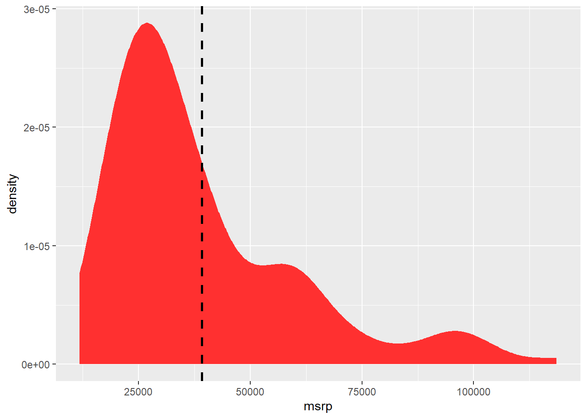
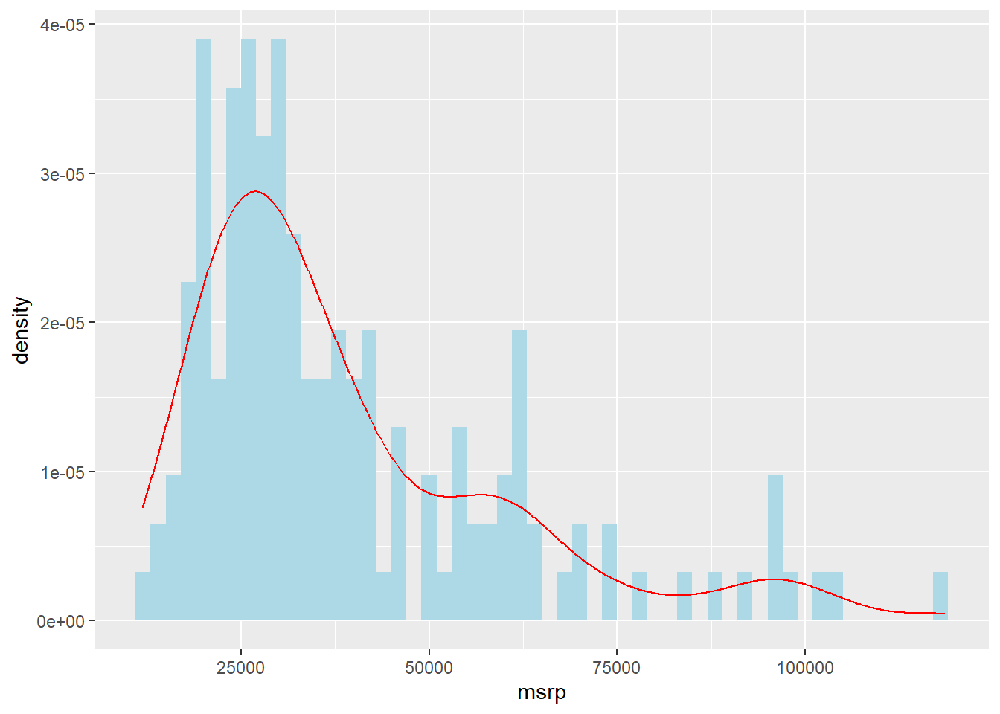
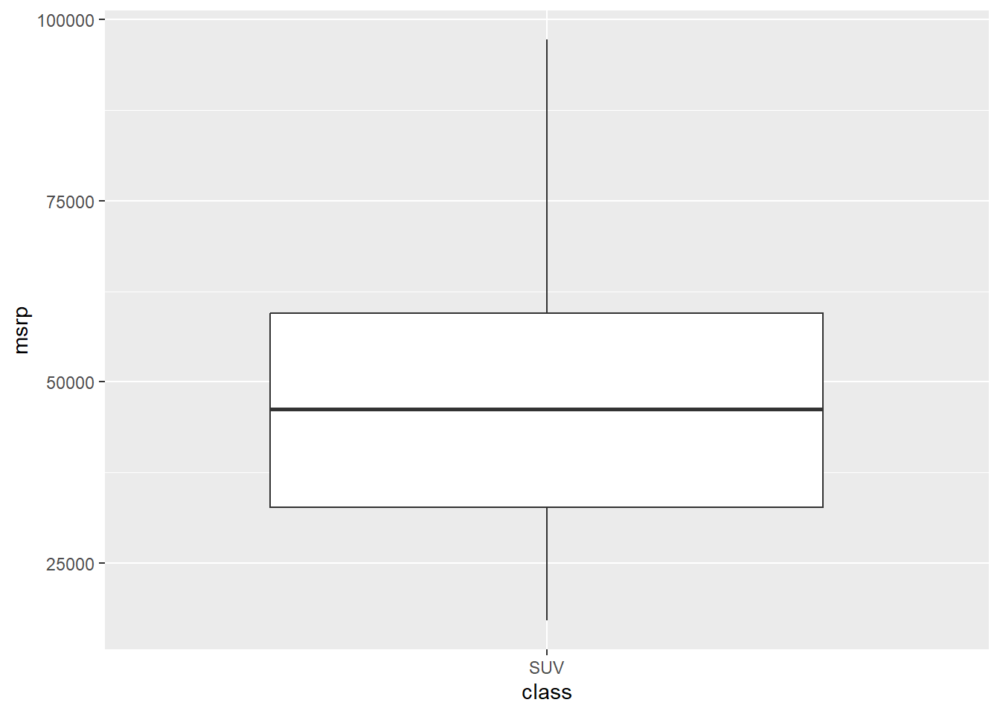
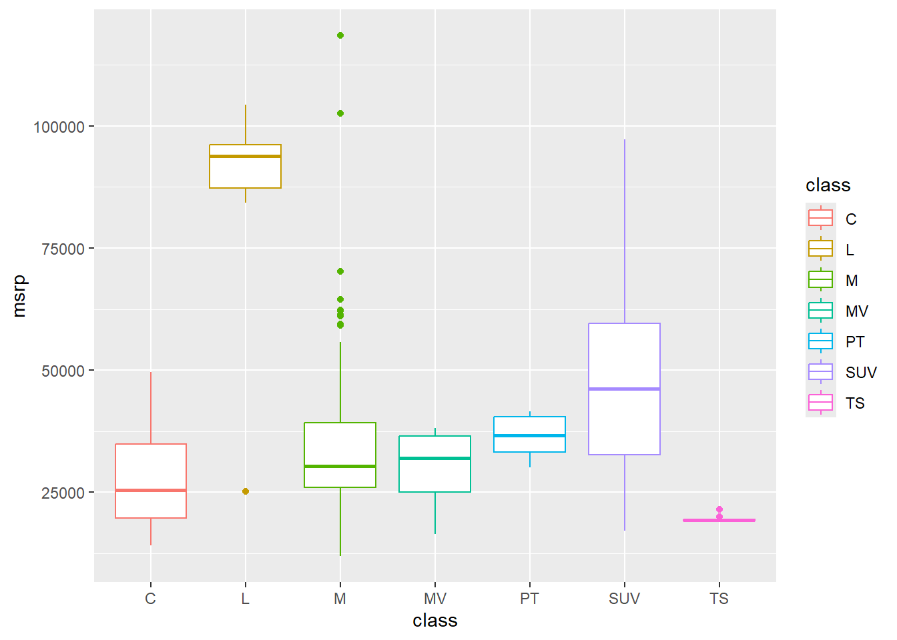

hyb <- read.csv(file.choose())2 Summarising Data
In order to visualise data, you need to understand it! A helpful tool in understanding your data is to produce summary statistics for your variables. Here, I will show you how to use R to produce these summary statistics that can help inform your decision-making when it comes to future analysis.
- Numeric Data
With numeric data you are mostly concerned with measures of location and spread. Measures of location are statistics that demonstrate where the typical value is in the data set. Examples of these measures are mean and median. To do so, you can use the mean() or median() functions and select a numeric variable in the data set.
median(hyb$msrp)[1] 31844.78mean(hyb$msrp)[1] 39193.82Measures of spread indicate how centralised your data set is. For these, you may wish to look at the standard deviation or a summary of your variable that includes the ranges and quartiles.
summary(hyb$msrp) Min. 1st Qu. Median Mean 3rd Qu. Max.
11849 24988 31845 39194 48815 118544 sd(hyb$msrp)[1] 21407.84msrp <- data.frame(
mean = mean(hyb$msrp),
sd = sd(hyb$msrp)
)
print(msrp) mean sd
1 39193.82 21407.84- Categorical Data Categorical data are a little bit different. You don’t want a mean or standard deviation, rather you want to know the frequency or proportion of the whole data set fits into each category. You can use the
# Create table
class_tab <- table(hyb$class)
# Turn into a clean data frame
class_df <- data.frame(
class = names(class_tab),
count = as.vector(class_tab),
proportion = round(as.vector(prop.table(class_tab)), 1)
)
print(class_df) class count proportion
1 C 32 0.2
2 L 8 0.1
3 M 56 0.4
4 MV 4 0.0
5 PT 6 0.0
6 SUV 39 0.3
7 TS 9 0.1Very good! Right, let’s get visualising some summaries.
2.1 Visualising Summaries
One of the most useful data visualisations for any data scientist summarises your data! You can learn a lot about your data by seeing how it is distributed. Additionally, you can present a lot of information to others in these types of visualisations.
library(ggplot2)
library(dplyr) # we use this to filter the data
Attaching package: 'dplyr'The following objects are masked from 'package:stats':
filter, lagThe following objects are masked from 'package:base':
intersect, setdiff, setequal, union2.2 Histograms and Density Plots
the most basic plots for summarising a continuous variable in your dataset are histograms and density plots.
USES:
View the distribution of a variable.
Identify skewness and outliers in the data
ggplot(hyb, aes(x = msrp)) +
geom_histogram() `stat_bin()` using `bins = 30`. Pick better value with `binwidth`.
A histogram presents a count on the Y axis of the graph. It separates the variable you place on the X axis into ‘bins’ of a reasonable size to present the data. Think of this as a count of the number of cars within certain mini price ranges (intervals). These intervals are known as the bins that histogram creates. Basically, R chops up the X axis variable into equal width intervals to present in the graph.
Histograms are useful to quickly present the distribution of the data. The distribution means how many observations are present at every point along the range of the X axis. High points of a histogram represent many observations at that point while low points represent fewer observations at that point of the X axis. So, a histogram shows the absolute volume of the variable.
Additionally, think about the ‘tails’ of the histogram. Is the peak to one side or right in the middle? This is a visual representation of the skewness of the variable. If there is a tail to the right, we call it right skewed, meaning that very few observations are represented at the top-end of the range. The inverse is true for a left-skewed distribution.
What does this histogram tell you about the prices variable in this data set?
A density plot is a variation of a histogram that shows the distribution of a continuous variable. Like a histogram, it helps visualize features such as skewness, spread, and central tendency.
However, the key difference is in the y-axis:
A histogram displays counts — the number of observations in each bin.
A density plot displays probability density — which shows how likely it is that a value falls near a given point on the x-axis.
In a density plot, the area under the curve sums to 1 (or 100%), representing the total probability across the full range of the variable. This makes density plots especially useful for comparing distributions across groups, even if the sample sizes differ.
While the shape of a density plot often mirrors that of a histogram, the height of the density curve is not the raw count, but the relative likelihood of observing a value in a small interval.
ggplot(hyb, aes(x = msrp)) +
geom_density(color = "firebrick1", fill = "firebrick1")You can also add a mean line to either a histogram or density plot by using the vline() option. Take a look at the code below.
ggplot(hyb, aes(x = msrp)) +
geom_density(color = "firebrick1", fill = "firebrick1") +
geom_vline(aes(xintercept = mean(msrp, na.rm = TRUE)), color = "black", linetype = "dashed", linewidth = 1)
Furthermore, you can combine the density line with the histogram. However, because the density plot requires the density not count on the Y axis, you must alter the Y axis option in the ggplot() to represent this.
ggplot(hyb, aes(x = msrp)) +
geom_histogram(aes(y = after_stat(density)), binwidth = 2000, fill = "lightblue") +
geom_density(color = "red")
Note that the histogram measures are higher than the density curve but the pattern is roughly the same? That is indicative of the differences in how they are measured (count vs. density).
2.3 Box Plots
Next, we can use box to present even more information about our data. These both represent the relationship between two variables, usually one categorical and another continuous. Box plots provide a mini number summary for a specific category within the data set.
USES:
- Box plots show a summary of statistics of a variable.
- Identify outliers
- Compare distributions across categories
Since these plots are not as intuitive as a histogram showing a count, let’s visualise one and discuss what it represents before moving on to more complicated visualisations.
In hybrid car data set there is a variable that identifies the class of car (e.g. SUV). We might want to describe the distribution of price for SUVs using a box plot. The chunk below generates a box plot using ggplot() but only presents the class “SUV” by using dplry pakcage’s filter() function.
Filtering is a great way to reduce your data set quickly by a category. For example, if you wanted a separate data set with only SUVs, you could use the filter() function.
Back to our box plot. The box itself highlights the middle 50% of the data — this is called the interquartile range (IQR). The bottom and top edges of the box represent the 25th and 75th percentiles, respectively, while the line inside the box shows the median (the 50th percentile). The “whiskers” extend from the box to the smallest and largest values that fall within 1.5 times the IQR. Any points beyond the whiskers are typically considered outliers and are shown as individual dots. In this case, the boxplot shows how SUV prices are spread out, with the box capturing the typical price range and the median line indicating the midpoint of those prices.
ggplot(hyb, aes(x = class, y = msrp)) +
geom_boxplot(data = dplyr::filter(hyb, class == "SUV"))
A strength of box is to show multiple groups on one plot so that you can compare the distributions across these categories. Take a look at the box plot number summaries of price by each class of car.
ggplot(hyb, aes(x = class, y = msrp, color = class)) +
geom_boxplot() 
What stories can you tell about these cars from this visualisation?
2.4 Activities
From Winston Chang’s R Graphics Cookbook:
2.4.1 6.9
- Violin Plots
2.4.2 6.10
- Dot plots
2.4.3 6.1.3
- Options for histograms
2.4.4 6.6.3
- Options for density curves
2.4.5 6.6.3
- Options for boxplots